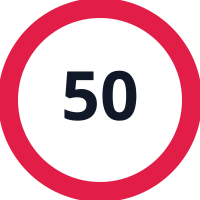
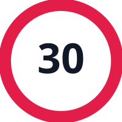
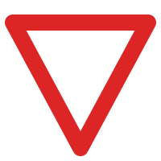

AI SCANNING
CENTER ROI LOCK
|
0 ms
Camera Stream Offline
Click "Start Real-Time Detection" below or choose an image mode to begin predicting traffic signs.
QUICK TEST PRESETS (CLICK TO CLASSIFY)
Instant ground-truth verification from GTSRB dataset
Stop Sign

Speed 50
Speed 30
Yield
No Entry
Turn Right
Roundabout
Priority Road